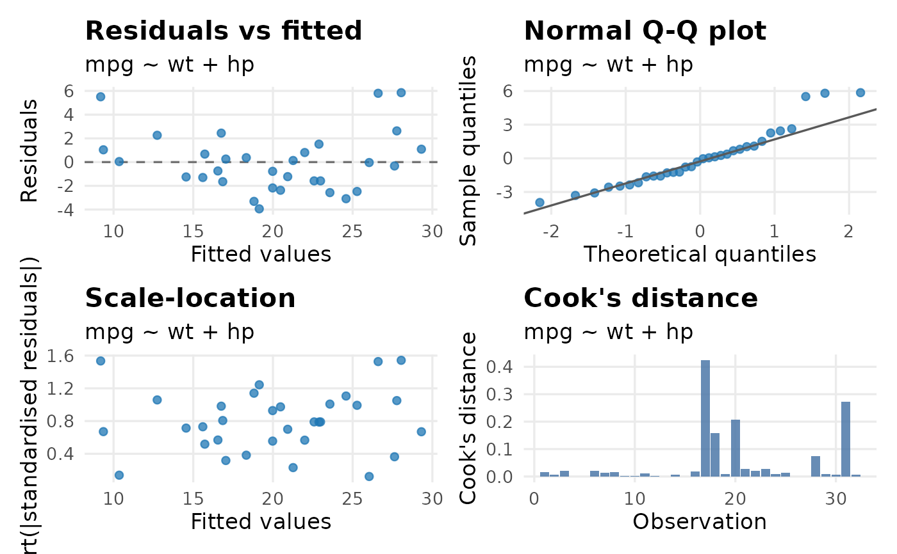
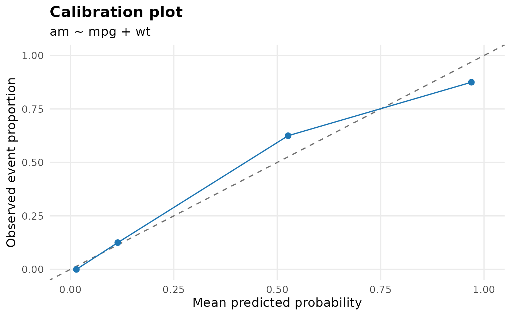
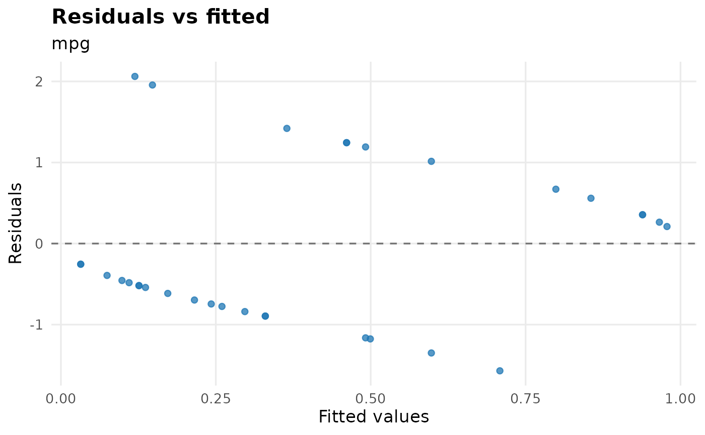

Visualise model fit for fitted regression models and models stored inside
uni_reg() or multi_reg() results.
Usage
plot_model_fit(
model,
model_name = NULL,
type = c("auto", "all", "residual", "qq", "scale_location", "cooks",
"observed_predicted", "calibration"),
bins = 10,
base_size = 13
)Arguments
- model
A fitted
lmorglmmodel, or auni_reg()/multi_reg()result.- model_name
Optional model name to select when
modelcontains multiple fitted models. Quoted and bare names are accepted.- type
Plot type. One of
"auto","all","residual","qq","scale_location","cooks","observed_predicted", or"calibration". Quoted and bare values are accepted.- bins
Number of groups used for binomial calibration plots.
- base_size
Base font size for the plot theme.
Value
A ggplot2 object for a single plot, or a patchwork object when
multiple diagnostics are requested.
Details
plot_model_fit() is a visual check of how a fitted model behaves, not
a formal model-selection rule. For survival models, use check_ph() for Cox
proportional hazards diagnostics and plot_surv_fit() for parametric
survival model fit.
For binomial models, type = "calibration" compares grouped predicted
probabilities with observed event proportions. This is most informative for
multivariable models, where predictions vary across many patients. A
univariable binary predictor may produce only two calibration points; that is
expected and simply reflects the two fitted probabilities in the model.
Logistic residual plots often show two bands because the outcome is coded as
event/non-event.
Examples
fit_lm <- lm(mpg ~ wt + hp, data = mtcars)
plot_model_fit(fit_lm)

fit_glm <- glm(am ~ mpg + wt, data = mtcars, family = binomial())
plot_model_fit(fit_glm, type = calibration, bins = 4)

uni_fit <- uni_reg(mtcars, am, c(mpg, wt), approach = logit)
plot_model_fit(uni_fit, model_name = mpg, type = residual)
